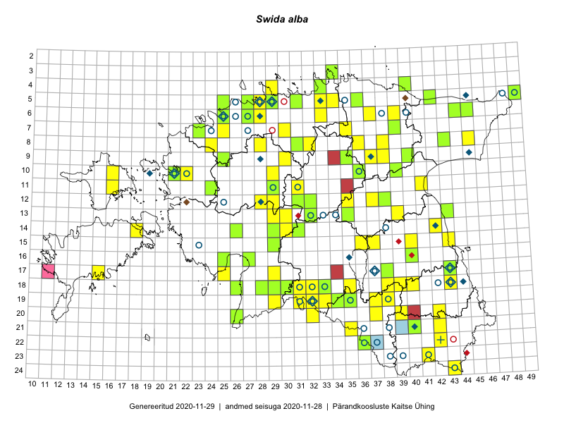

Swida alba
Uuendatud: 2016-12-08
Kaardile koondatud taksonid: Cornus alba L.; Swida alba (L.) Opiz

Kaart põhineb 55 vaatlusel. Taime on leitud 40 ruudust.
| Ruut | Vaatleja(d) | Vaatlusaeg | Kirje tüüp | Viide andmebaasikirjele |
|---|---|---|---|---|
| 12-28 | Tiit Hallikma, Toomas Kukk, Indrek Tammekänd | 2015-06-09 | ruut/ala | vaata PlutoFis |
| 12-29 | Tiit Hallikma, Indrek Tammekänd, Toomas Kukk | 2015-06-09 | punkt | vaata PlutoFis |
| 12-28 | Tiit Hallikma, Toomas Kukk, Indrek Tammekänd | 2015-06-09 | punkt | vaata PlutoFis |
| 24-43 | Ott Luuk, Peedu Saar | 2015-08-13 | ruut/ala | vaata PlutoFis |
| 14-30 | Peedu Saar, Liina Oja | 2015-06-10 | ruut/ala | vaata PlutoFis |
| 24-43 | Ott Luuk, Peedu Saar | 2015-08-13 | punkt | vaata PlutoFis |
| 14-31 | Peedu Saar, Liina Oja | 2015-06-10 | ruut/ala | vaata PlutoFis |
| 08-45 | Peedu Saar, Liina Oja | 2015-07-22 | ruut/ala | vaata PlutoFis |
| 11-29 | Tiit Hallikma, Toomas Kukk | 2015-06-11 | punkt | vaata PlutoFis |
| 11-31 | Ott Luuk, Toivo Sepp | 2015-07-12 | punkt | vaata PlutoFis |
| 15-37 | Eeva-Maria Jeletsky, Tarmo Niitla | 2015-05-05 | ruut/ala | vaata PlutoFis |
| 15-37 | Eeva-Maria Jeletsky, Tarmo Niitla | 2015-05-05 | punkt | vaata PlutoFis |
| 17-25 | Ott Luuk, Eerik Leibak | 2015-05-21 | punkt | vaata PlutoFis |
| 09-30 | Ott Luuk, Toivo Sepp | 2015-04-26 | punkt | vaata PlutoFis |
| 05-27 | Erkki Otsman, Sergei Smirnov | 2015-07-08 | ruut/ala | vaata PlutoFis |
| 12-38 | Ülle Jõgar, Illi Tarmu, K. Rünk | 2015-07-04 | ruut/ala | vaata PlutoFis |
| 17-15 | Sirje Azarov, Aira Alasi | 2015-05-05 | ruut/ala | vaata PlutoFis |
| 14-30 | Liina Oja, Ott Luuk | 2015-05-10 | punkt | vaata PlutoFis |
| 05-27 | Erkki Otsman, Sergei Smirnov | 2015-07-08 | punkt | vaata PlutoFis |
| 13-29 | Meeli Mesipuu, Timo Luhamäe | 2015-06-10 | ruut/ala | vaata PlutoFis |
| 13-29 | Meeli Mesipuu, Timo Luhamäe | 2015-06-10 | punkt | vaata PlutoFis |
| 18-28 | Meeli Mesipuu, Timo Luhamäe | 2015-06-09 | ruut/ala | vaata PlutoFis |
| 09-38 | Karin Kikas, Elle Rajandu | 2015-06-01 | ruut/ala | vaata PlutoFis |
| 07-39 | Kaili Orav, Silvia Pihu | 2015-06-17 | ruut/ala | vaata PlutoFis |
| 05-42 | Kaili Orav, Silvia Pihu | 2015-06-18 | ruut/ala | vaata PlutoFis |
| 18-31 | Ott Luuk, Indrek Tammekänd | 2015-05-22 | punkt | vaata PlutoFis |
| 13-35 | Ott Luuk, Liina Oja | 2015-05-11 | punkt | vaata PlutoFis |
| 06-37 | Ott Luuk, Liina Oja | 2015-05-13 | punkt | vaata PlutoFis |
| 12-38 | Ülle Jõgar, Illi Tarmu, Kai Rünk | 2015-07-03 | punkt | vaata PlutoFis |
| 08-28 | Aat Sarv | 2015-08-03 | ruut/ala | vaata PlutoFis |
| 12-38 | Ulvi Selgis | 2016-05-13 | ruut/ala | vaata PlutoFis |
| 22-36 | Silvia Pihu | 2015-06-27 | punkt | vaata PlutoFis |
| 14-42 | Eeva-Maria Jeletsky, Tarmo Niitla | 2016-07-21 | punkt | vaata PlutoFis |
| 14-42 | Eeva-Maria Jeletsky, Tarmo Niitla | 2016-07-21 | ruut/ala | vaata PlutoFis |
| 08-38 | Liina Oja, Eerik Leibak | 2016-07-28 | ruut/ala | vaata PlutoFis |
| 06-39 | Thea Kull, Hannes Pehlak | 2016-07-25 | ruut/ala | vaata PlutoFis |
| 08-36 | Ott Luuk | 2016-08-11 | punkt | vaata PlutoFis |
| 10-16 | Maret Gerz, Meeli Mesipuu | 2016-08-09 | punkt | vaata PlutoFis |
| 08-38 | Liina Oja, Eerik Leibak | 2016-07-28 | punkt | vaata PlutoFis |
| 10-36 | Karin Kikas, Elle Rajandu | 2016-06-30 | punkt | vaata PlutoFis |
| 15-40 | Kaire Lanno, Karin Kaljund | 2016-07-18 | ruut/ala | vaata PlutoFis |
| 15-40 | Kaire Lanno, Karin Kaljund | 2016-07-18 | punkt | vaata PlutoFis |
| 19-34 | Sirje Azarov, Peedu Saar | 2016-07-19 | punkt | vaata PlutoFis |
| 05-31 | Sander Laherand, Toomas Kukk | 2016-08-30 | ruut/ala | vaata PlutoFis |
| 07-25 | Helle Mäemets, Tiina Elvisto | 2016-07-05 | ruut/ala | vaata PlutoFis |
| ? | Helle Mäemets, Tiina Elvisto | 2016-07-05 | punkt | vaata PlutoFis |
| 16-40 | Kai Rünk, Ülle Jõgar, Illi Tarmu | 2016-06-14T11:15Z | punkt | vaata PlutoFis |
| 16-40 | Kai Rünk, Ülle Jõgar, Illi Tarmu | 2016-06-14T11:30Z | ruut/ala | vaata PlutoFis |
| 13-30 | Tõnu Ploompuu, Hannes Pehlak, Marko Veinbergs | 2016-07-21 | ruut/ala | vaata PlutoFis |
| 05-28 | Kadi-Liis Kesler, Tiina Elvisto | 2015-05-12 | ruut/ala | vaata PlutoFis |
| 13-35 | Ott Luuk, Hannes Pehlak | 2016-07-22 | ruut/ala | vaata PlutoFis |
| 04-29 | Kadi-Liis Kesler, Tiina Elvisto | 2015-08-12 | ruut/ala | vaata PlutoFis |
| 10-16 | Meeli Mesipuu, Maret Gerz | 2016-08-09 | ruut/ala | vaata PlutoFis |
| 23-41 | Ott Luuk, Sander Laherand, Susanna Vain | 2016-06-15 | punkt | vaata PlutoFis |
| 19-32 | Jaak-Albert Metsoja, Mari Metsoja, Lena Neuenkamp | 2016-07-18 | ruut/ala | vaata PlutoFis |